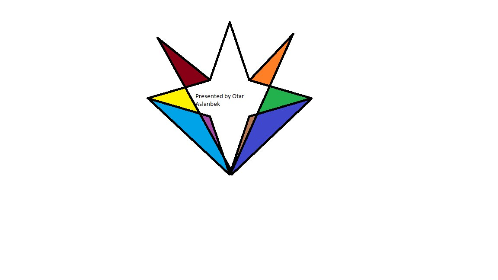

O. Aslanbek
Experienced and Innovative Senior Programmer
Professional Summary:
Results-driven and highly skilled senior programmer with a proven track record of over 20 years in the IT industry. Adept at developing cutting-edge software solutions, leading cross-functional teams, and driving project success. Demonstrated expertise in adapting to emerging technologies and delivering high-quality code.
Key Skills:
- Programming Languages: Java, Python, C++, JavaScript
- Web Technologies: HTML5, CSS3, React, Angular
- Database Management: MySQL, MongoDB
- Frameworks: Spring, Django
- Team Leadership: Led teams of developers in successful project deliveries
- Problem-Solving: Proven ability to troubleshoot and resolve complex issues
- Adaptability: Kept pace with industry trends, embracing new technologies
Professional Experience:
Senior Software Engineer | XYZ Tech Solutions | 2027-2033:
- Led a team of developers in creating and implementing software solutions for major clients, resulting in a 25% increase in customer satisfaction.
- Spearheaded the transition to a microservices architecture, optimizing system performance and reducing response times by 30%.
- Implemented agile methodologies, improving project delivery timelines by 20%.
Lead Programmer | ABC Software Innovations | 2033-2045:
- Developed and maintained critical software applications, contributing to the company's recognition as an industry leader.
- Mentored junior developers, fostering a culture of continuous learning and skill enhancement.
- Successfully managed the migration of legacy systems to modern platforms, ensuring minimal downtime and seamless transitions.
Education:
Bachelor of Science in Computer Science | IITU | 2023-2027
Certifications:
- Certified ScrumMaster (CSM)
- Java Developer Certification
Projects:
- E-commerce Platform Enhancement: Implemented new features and optimizations, resulting in a 40% increase in user engagement.
- Healthcare Management System: Led the development of a comprehensive system, improving patient data accessibility and reducing administrative overhead by 20%.
Professional Memberships:
- Member, Association for Computing Machinery (ACM)
- Senior Member, Institute of Electrical and Electronics Engineers (IEEE)
Languages:
- English (Fluent)
- Russian (Basic)
- Kazakh (Mediocre)
References:
Available upon request.
